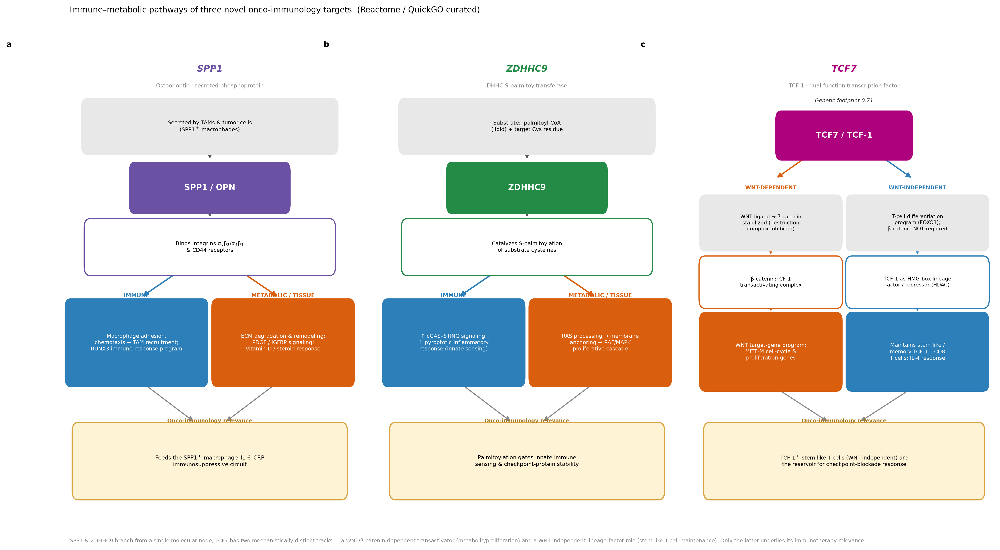
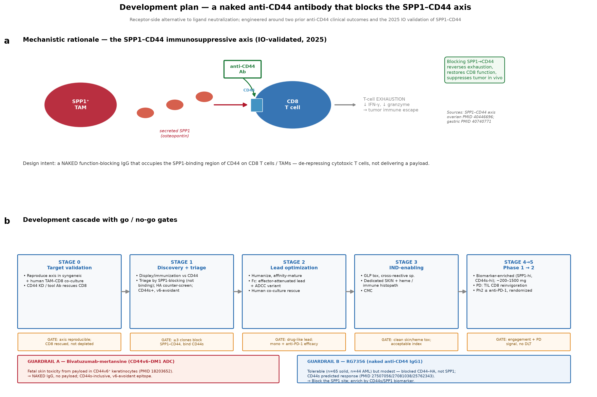
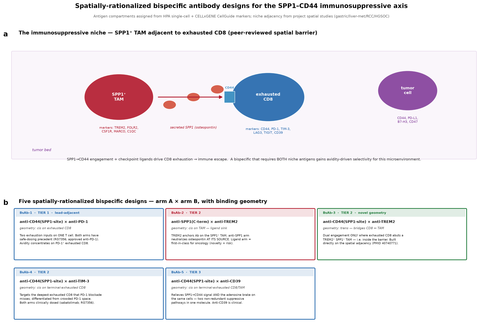

SPP1 / Osteopontin–CD44 Axis
An onco-immunology drug-target program: evidence, feasibility, novel-target strategy, development plan & spatially-rationalized bispecifics
Prepared 2026 · Claude Science
Executive summary
- Scope — 23 recent onco-immunology targets scored for genetic/functional-genomic evidence, clinical feasibility & novel-target opportunity; deep-dive on the SPP1–CD44 axis.
- Lead thesis — SPP1⁺ TAMs adjacent to exhausted CD8 drive immune escape via SPP1→CD44 (IO-validated, 2025). A naked function-blocking anti-CD44 occupying the SPP1-binding region is the lead modality.
- Why receptor-side — every SPP1-receptor interface has been drugged, none succeeded in oncology (integrins negative; CD44 ADC fatally toxic).
- Novel whitespace — SPP1 (0.91), ZDHHC9 (0.89), TREM2 (0.80) lead; no anti-osteopontin Ab in oncology.
- Bispecifics — five spatially-rationalized designs; lead anti-CD44(SPP1-site) × anti-PD-1.
Genetic & functional-genomic evidence

Per-target evidence axes (Open Targets); IO modulators carry little direct cancer-causation signal.
Clinical feasibility

10/23 targets have a clinical-stage molecule; SPP1's lead agent reached Ph2 in RA — not oncology.
Novel / preclinical target strategy

Reweighted for novel discovery; SPP1, ZDHHC9, TREM2 lead. Open faces = terminated programs.
SPP1 interaction network + trial outcomes

Every SPP1-receptor interface drugged; none succeeded in oncology; no anti-osteopontin cancer trial exists.
Immune–metabolic pathways of three novel targets

SPP1 & ZDHHC9 branch from single nodes; TCF7's WNT-independent lineage role underlies IO relevance.
Development plan — naked anti-CD44

Mechanistic rationale + Stage 0–5 go/no-go cascade. Guardrail A (no payload); Guardrail B (block SPP1 site, biomarker-enrich).
Spatially-rationalized bispecific designs

Five arm-A × arm-B designs; requiring BOTH niche antigens gives avidity-driven selectivity.
Data sources & grounding
- Drug/ligand: ChEMBL · Trials: ClinicalTrials.gov + PubMed · Evidence: Open Targets
- Networks: STRING · Expression/compartments: Human Protein Atlas + CELLxGENE CellGuide
- Spatial adjacency: gastric PMID 40740771, ovarian 40446696, liver-met 40335453, ccRCC 40680256; anchor Klement JCI 2018 PMID 30395540
- Patents: keyword-level web scan (not a professional FTO opinion)
- Caveat: spatial adjacency read from published figures/text, not recomputed from raw spots